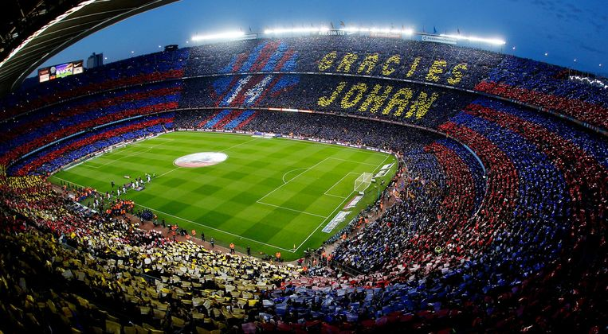
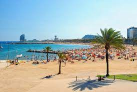
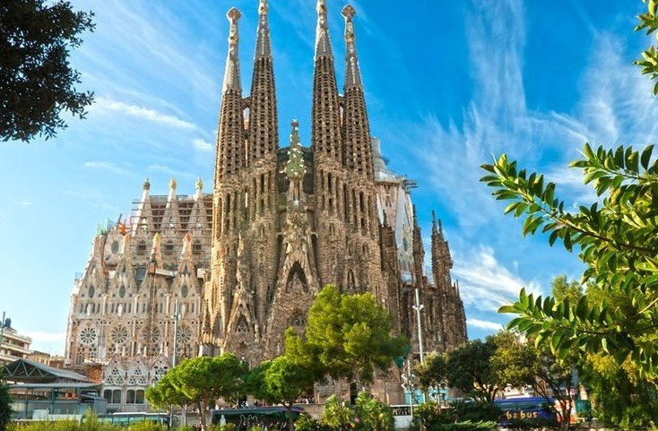
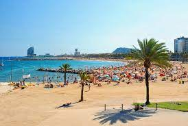
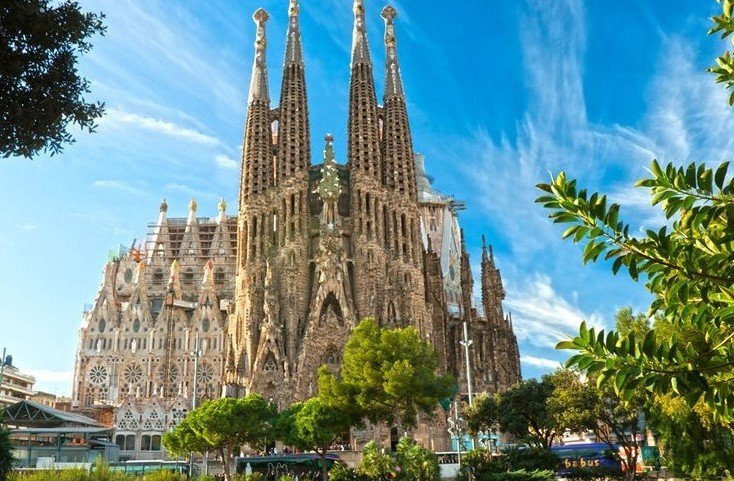

Bezienswaardigheden
Barcelona is een toeristische stad aan de kust van Noord Spanje.



Je kunt naar een wedstrijd van FC Barcelona gaan kijken. In het stadion van Barcelona
passen 99 duizend mensen. Het is een van de mooiste stadions ter wereld.

Barcelona is ook vooral een toeristische badplaats dus er zijn veel stranden. De prachtige zandstranden in
Barcelona zijn mega groot en lang. Echt een aanrader als van stranden houd.

De kerk Sagrada Familia is een historisch dat staat in Barcelona. In 1882 zijn ze begonnen met het bouwen van deze kerk.
De bouw van deze historische kerk heeft eigenlijk nooit stil gelegen. De architectuur van deze kerk is schitterend.
Er zitten zoveel details in de kerk verwerkt dat je het eigenlijk gewoon een mega groot kunst werk kunt noemen.